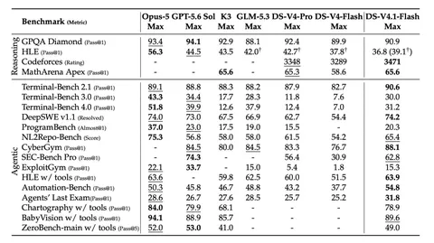

Продолжаем разбирать техрепорт DeepSeek-V4.1-Flash. Сегодня поговорим об архитектуре, а ещё речь пойдёт об обучении.
В SWA прогоняется не весь контекст, а только последние 128 токенов для построения начального SWA KV. Это не сильно влияет на качество, но позволяет уменьшать общий размер кеша в восемь раз по сравнению с тем, что было у DeepSeek-V4-Flash.
Также в версии 4.1 используется Single-Pass mHC. mHC — Manifold-Constrained Hyper-Connections — вариант hyper-connection, в котором спектральная норма всех проекций равна единице. В варианте Single-Pass матрица смешивания вычисляется по прошлому слою и не зависит от текущих активаций. Благодаря этому, её можно зафьюзить в один кернел и получить ускорение, а также снизить трафик активаций.
Engram со 196 миллиардами параметров «лежит» в энкодере на первом и 14-м слоях, поделённый поровну. Для хранения N-грам используются восемь независимых кеш-голов, в каждой из которых примерно 16 миллионов записей. При этом «нагрузка» распределена неравномерно — чтобы уменьшить коллизии берутся простые числа, близкие к 16 миллионам. Сами N-грамы хранят в FP8. Из исходного Engram убрали каузальную свёртку, потому что она осложняла инференс.
В DeepSeek-V4.1-Flash вместо MTP используют DSpark. Он внедряется на этапе генерации роллаутов, и DSpark динамически обновляется под меняющуюся политику. KV-кеш хранят в формате NVFP4. Кеш квантуется после RoPE, потому что так удобнее инферить и это избавляет от необходимости накладывать RoPE на квантизованный кеш. Для SWA KV кеш делают в FP8, но он достаточно лёгкий, поэтому не сказывается на скорости работы.
Что касается инфраструктуры, то зрительный энкодер запускается отдельно, чтобы не тормозить языковой конвейер. Батчи накладывают так, чтобы они распределялись равномерно по числу токенов, ведь на входе могут быть изображения как высокого, так и низкого разрешения.
Декодирование почти не дорожает с ростом контекста — подорожание с 4К токенов до 1М составляет примерно 25%.
При сборе данных для обучения отфильтровывали слабый синтетический машинный перевод и старую информацию — старались брать свежие данные. В мультимодальный набор вошли пары изображения-текст и документы. В итоге вышло примерно семь токенов текста на один мультимодальный.
На претрейне было 45 триллионов мультимодальных токенов. Батч составлял 100,6 миллиона токенов, а контекст увеличивали с 64 тысяч до миллиона, снижая LR. По качеству рассуждений и выполнению задач, связанных с программированием, после претрейна 4.1-Flash сопоставим с V4-Pro-Base.
На посттрейне — стандартный SFT, объемный RL с большим числом сред и синтетическими задачами. Для тренировки агентского поведения брали агентские задачи из открытых источников, а также генерировали синтетические — имитации корпоративных систем, их ошибок. Большее число RL-шагов позволило получить лучшие результаты в стандартных бенчмарках на кодинг вроде SWE-Bench Pro и DeepSWE.
Сам RL — асинхронный. Роллауты генерируются независимо и подаются в модель по готовности. Токены с чрезмерной давностью маскируются в лоссе, чтобы избежать off-policy.
В финале посттрейна проводят On-policy-дистилляцию. Здесь более 40 моделей-учителей, каждая из которых отдельно проходила этап посттрейна. Учителя асинхронно генерируют траектории. Данные ученику подаются динамически от разных учителей, что позволяет получить лучшее качество.
По бенчмаркам DeepSeek-V4.1-Flash на агентских задачах примерно равен Opus-5. Однако авторы отмечают уязвимости сред оценки и сообщают, что модели могли произвести reward hacking. Результаты можно посмотреть в таблице выше.
Разбор подготовил
Душный NLP
